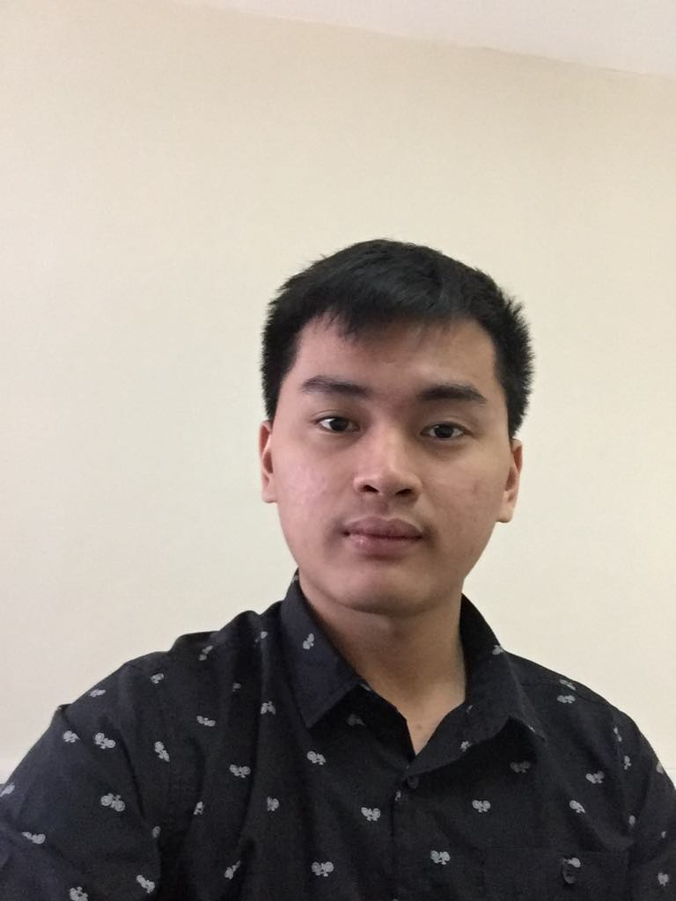

|
Hello, I’m Adrian John Antonio from BSIT-MI181. My mental state today is fine and for some reason, I’m motivated to learn new subjects that we have. I’m from San Fernando, Pampanga and currently residing in APC’s Dormitory Room.
I used to travel to many places in Manila for the purpose of finding computer shops and game tournaments because I used to be an online game enthusiast who loves playing online games and observe other people how they play games, especially pro players. But one time, while I was playing an
online game called Kritika, someone I knew invited me to be part of his team to play to an esports tournament of Kritika. It was unexpected to me because I taught I’m still not good enough at playing Kritika and never crossed in my mind to play, I guess I doubt myself for nothing. While I was playing for
the team, we won 1st runner up on esports tournament and it was amazing, I just realized how ambitious I am playing computer games.
My expectation from this class is our prof to be efficient to her subject.
|
